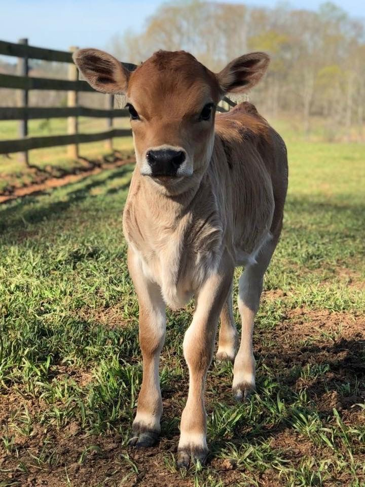
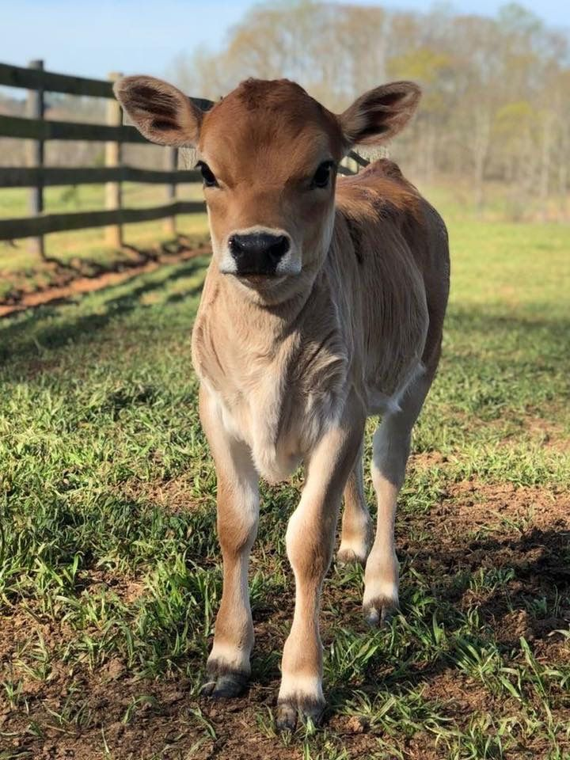
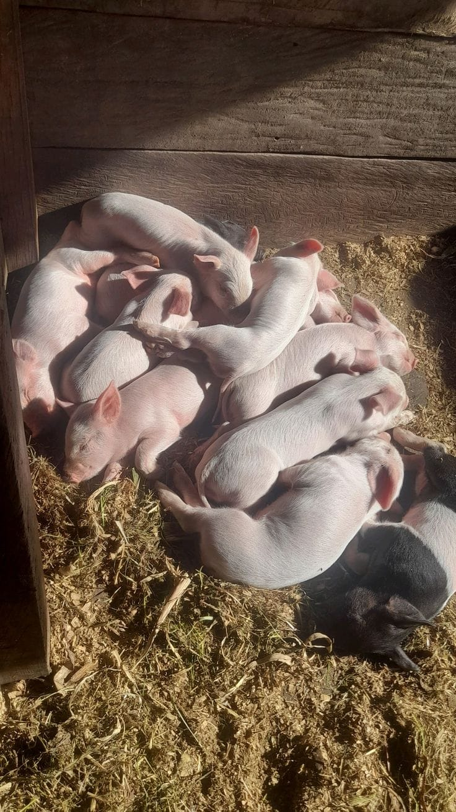
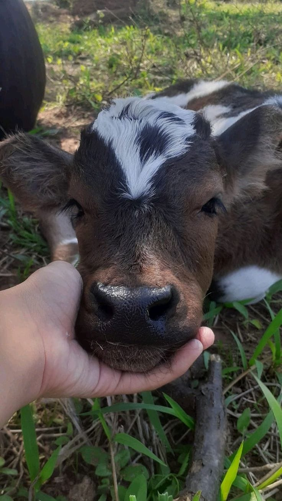
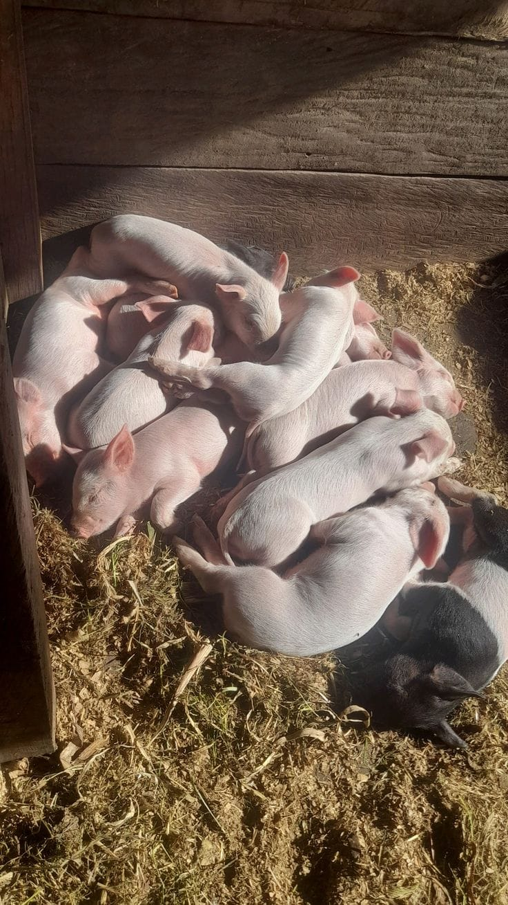
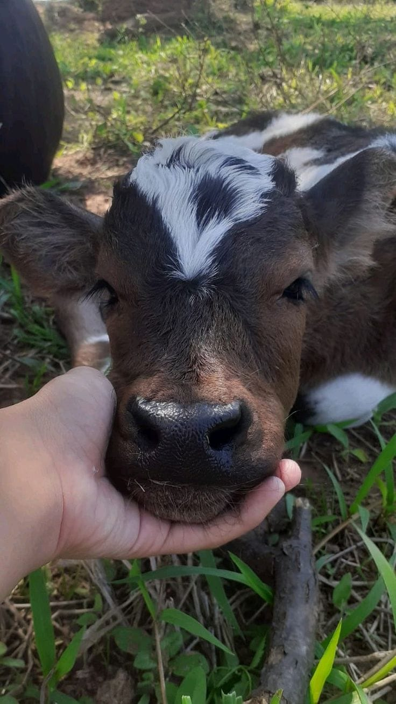

Consejo de salud
Cómo mantener a tu mascota feliz y saludable.
Cuidamos a tus mascotas con amor y profesionalismo.
Atención médica profesional.
Cuidado estético para tus mascotas.
Protección contra enfermedades.
Cómo mantener a tu mascota feliz y saludable.
La importancia de una dieta balanceada para mascotas.
 


 


